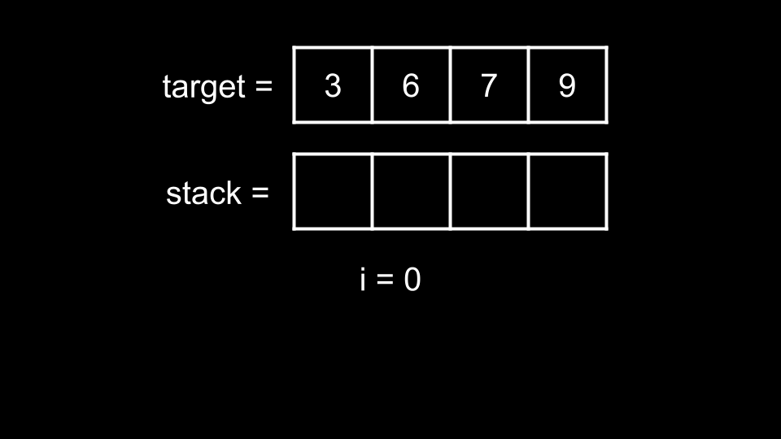
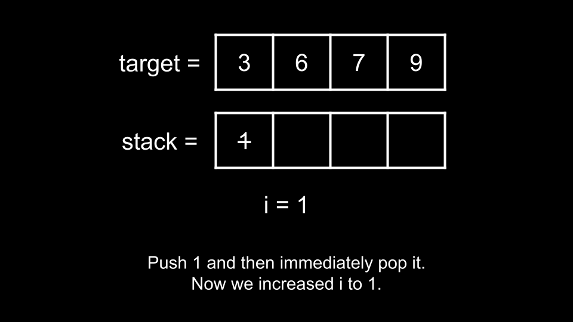
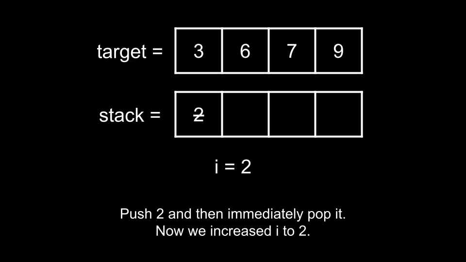
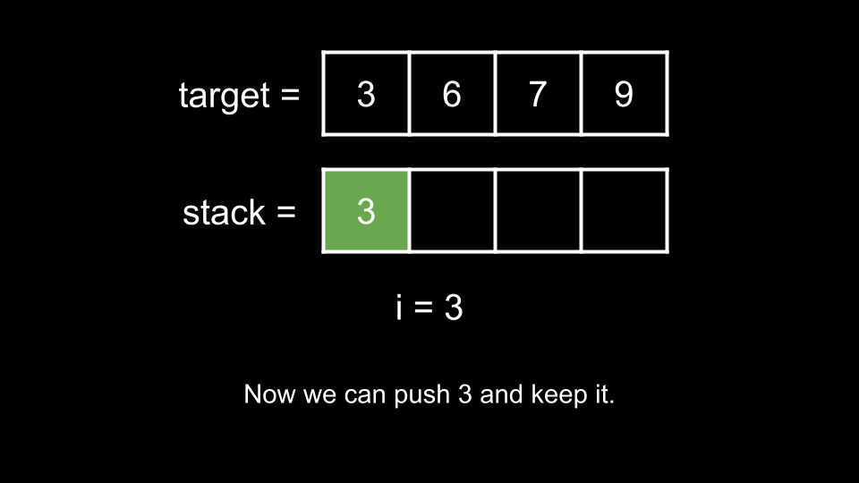
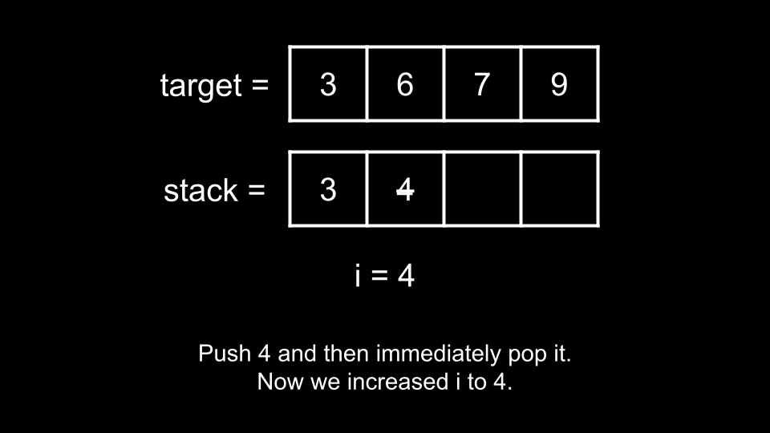
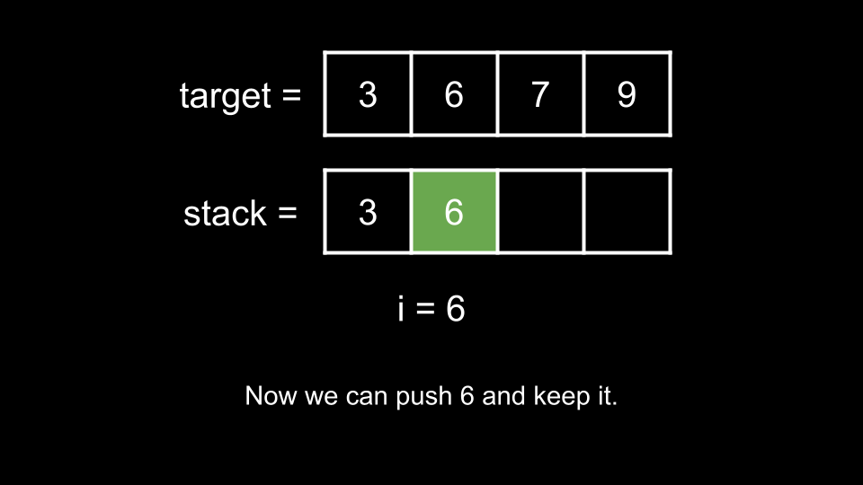

Intuition
In this problem, we are given two stack operations:
The numbers that we push to the stack are ordered from 1 to n. Each number is available
only once, so if we pop a number from the stack, that number is permanently gone. This means we want to pop every
number that does not appear in target and should never pop any number that does appear in
target.
We stop once the stack is equal to target and we are allowed to return any valid answer. Because target
is always sorted and the stream of numbers always comes in ascending order, we can build target one
element at a time, starting with the first element.
Let's use an integer i that represents the most recently pushed number. Initially, i = 0 as
no numbers have been pushed yet.

In this example, the first number we need to reach in target is 3. Before we can reach
3, we need to go through 1, 2. However, we don't want either 1 or
2 in the answer, so we can immediately pop 1 after pushing it, and pop 2
after pushing it. Essentially, we are only pushing them to move forward until we reach 3.


Now, we are ready to push 3, so we do so.

To get to the next number 6, we must first go through 4, 5. Again, we don't want either
4 or 5 in the answer, so we can immediately pop 4 after pushing it, and pop
5 after pushing it.

Now, we are ready to push 6, so we do so.

We continue this process for each number in target. This brings us to our solution. We iterate over each
num in target:
i, and repeat the process until we
are ready to push num.
num? Recall that i represents the most recently pushed
number. Thus, we are ready to push num when the most recently pushed number is i = num -
1.
i.Algorithm
ans and the integer i = 0.num in target:
i < num - 1:
"Push" to ans."Pop" to ans.i."Push" to ans.i.ans.Implementation
Javaclass Solution { public ListC++buildArray(int[] target, int n) { List ans = new ArrayList(); int i = 0; for (int num : target) { while (i < num - 1) { ans.add("Push"); ans.add("Pop"); i++; } ans.add("Push"); i++; } return ans; } } class Solution { public: vectorPython3buildArray(vector & target, int n) { vector ans; int i = 0; for (int num : target) { while (i < num - 1) { ans.push_back("Push"); ans.push_back("Pop"); i++; } ans.push_back("Push"); i++; } return ans; } }; class Solution: def buildArray(self, target: List[int], n: int) -> List[str]: ans = [] i = 0 for num in target: while i < num - 1: ans.append("Push") ans.append("Pop") i += 1 ans.append("Push") i += 1 return ans
Complexity Analysis
Time complexity: O(n)O(n)
Let k denote the largest (final) element in target. We push (and maybe pop) every
number from 1 until k. This gives us a maximum of 2k2k
operations. In the worst case scenario, k = n, which gives us a time complexity of O(n)O(n).
Space complexity: O(1)O(1)
We don't count the answer as part of the space complexity. Thus, we aren't using any extra space other than
the integer i.